RubeGoldberg Machine
Interesting things about our design
The main purpose of our design was to do some easy task with a lot of complexity involved in it. The design accomplishes a task of ringing a bell by putting a ball into a container through a series of steps. We have employed used of multithreading in c++ to play the music. Also we have a gear like system in the design to help the process. We can also see many different features like dominos, pulley systems, and hanging bells which produce sweet sound.
Main Machine Components
- Pulley Sytems
- Single Point Fixed Rotating bars
- Pendulm
- Ball
- Chiming Bells Hanging
- Dominos
- Motor
- Lever
- Blocking Rod
- Rotating Gears
Difference between the original and finished design
We have moslty follwed the design we proposed but with a minor change that we are going to ring a bell instead of liting a bulb as shown in the design. And most of the design has been followed strictly with extra additions to it and nothing deleted from it. Feature extension of sounds on certain collisions has been added.
Brief Overview of the Code
Most of the code editing pertaining to showing objects and adding them to display is done in the "dominos.cpp" file. Secondly there has been use of multithreading in the project to add sound to the simulation. These form the important parts of the project, ofcourse not forgetting to mention the Box2D library and the certain parts of the code orignally belonging to base. We have written our cutsom class(inherited it from b2ContactSolver) for getting feedback on collision and whose callback function helps us in some actions. We have used multithreading in out code to play the music using the p\_thread library. It is shown in the following call call graph. Also the system usage due to the threading is not significant. The files which include editing from our side are dominos.cpp, cs296\_base.hpp, cs296\_base.cpp. Also we are using mpg123 to play the .mp3 files.
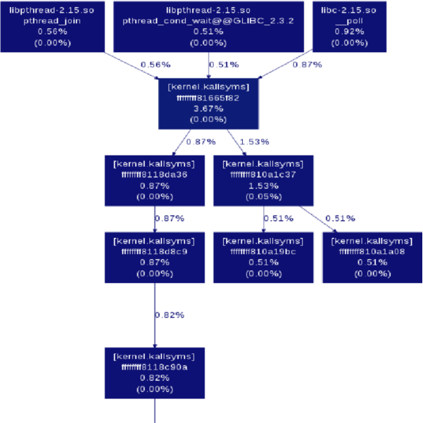
Call Graph Showing use of Threading
Analysis of the code
Code analysis using Gprof Matplotlib and GunPlot
Plot01 : Step-time Vs Iterative Values
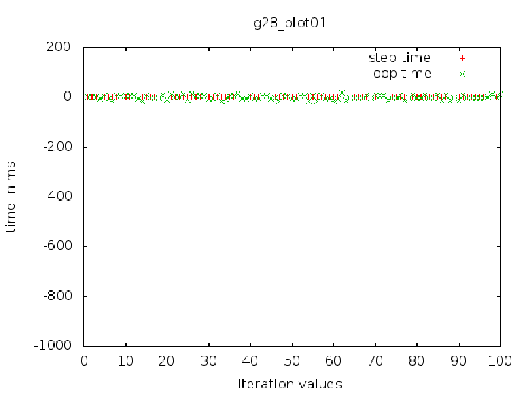
System Resource usage is High
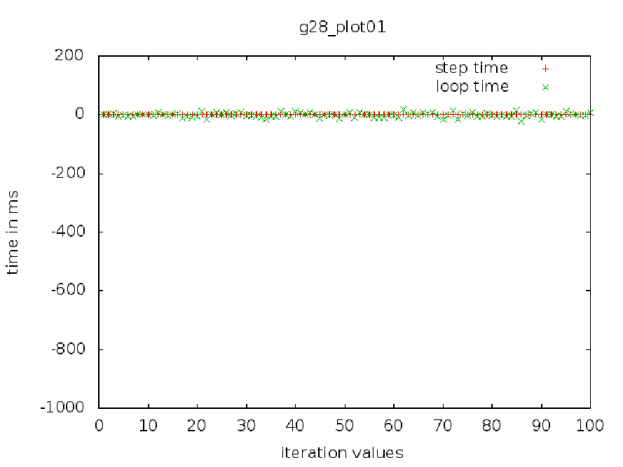
System Resource usage is Low
- The Step-Time in Figure~\ref{fig:ResourceIntensivePlot01} is totally scattered but the Loop-time is almost Linear and the value tends to zero because when the processor is in its full usage, priorities is decided using the scheduling algorithm. So, the running of the base-code is not certain at a given time and so the graph of step-time over Iterative values has no certain pattern.
- The Step-Time in Figure~\ref{fig:ResourceIntensivePlot01a} is not scattered and we can see certain decreasing pattern. We can see that the step-time value is large in small number of Iterative-Values and less in the greater range of Iterative-Values, because as the iteration number increase the process becomes more resource intensive and operating system tries to give more resources to such a process(if it can) and hence we observe a decrease in step time. We also feel that as the time for which the process executes increase it gets more CPU resources.
- There is one more interesting observation on the loop time graph which can be divided approximately into two linear graphs,the later one less steeper than the former and the reason for such a behaviour is that the operating system tends to allocate more resources to a program which has been running for a longer time.
Plot02 : Step-Time, Collision-Time ,Velocity-Update ,Position-Update Vs Iterative Values
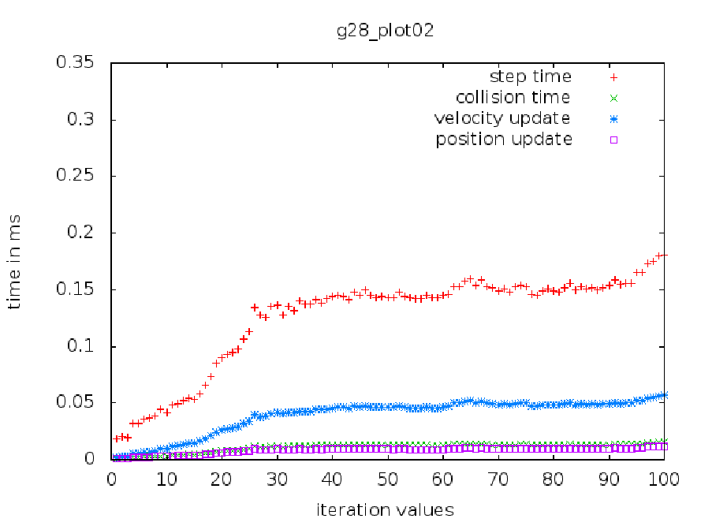
System Resource usage is High
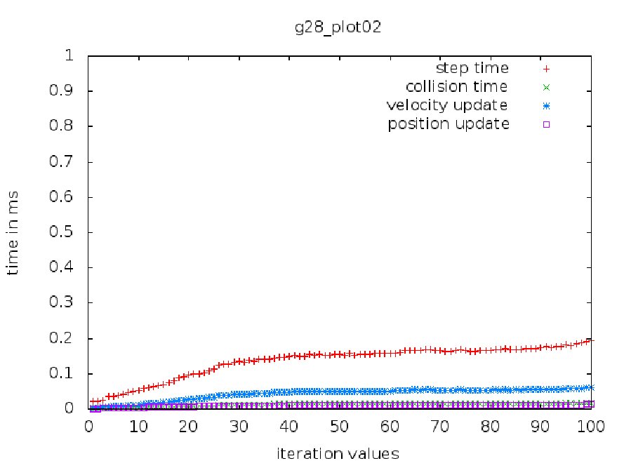
System Resource usage is Low
- As the step-time values depend on velocity-update values,the position-update values, collision-time values so as the step-time values are scattered we can easily see that the respective values are also different at various iterative values.
Plot03 : Step-Time, Loop-Time Vs Rerun-Values
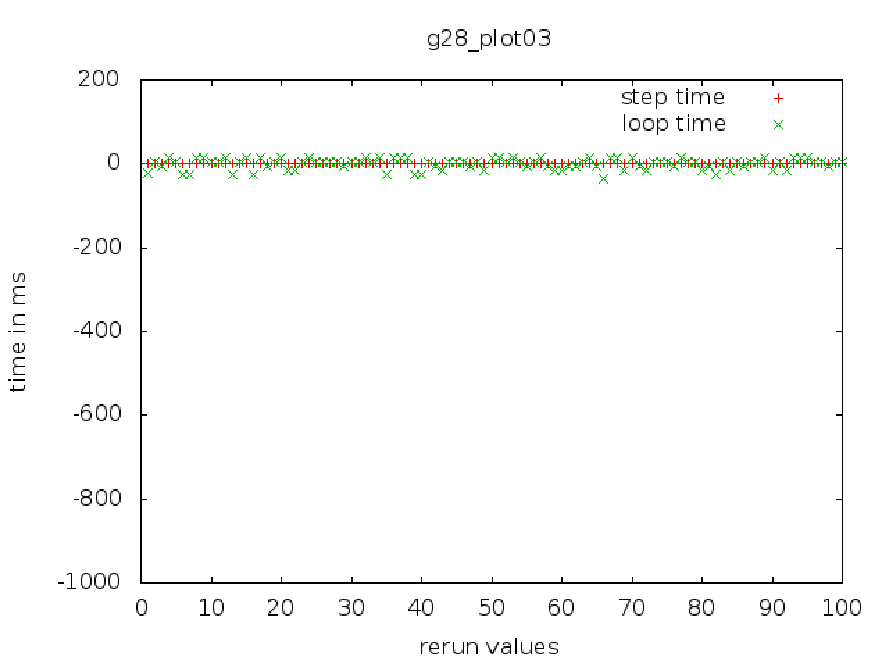
System Resource usage is High
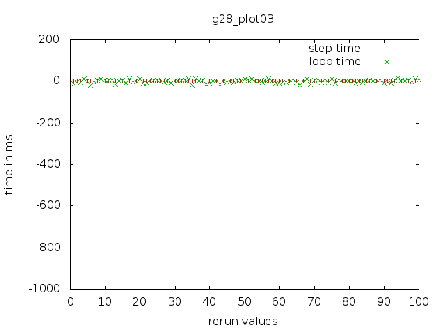
System Resource usage is Low
- We can see that the values of step-time in Figure~\ref{fig:1} are increased, whereas in Figure~\ref{fig:2} are almost equal to zero, the reason is already explained in Figure-1 and Figure-2 The step time in loaded system 0.5 approximately. This was as expected since the system was loaded.
Plot04 : Step-Time, Collision-Time, Velocity-Update, Position-Update Vs Rerun-Values
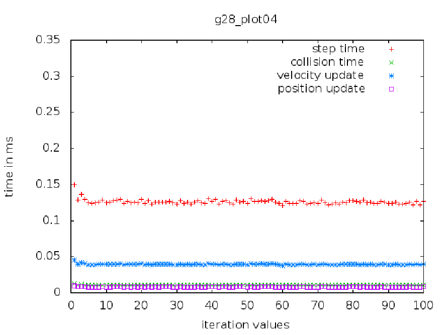
System resources usage is High
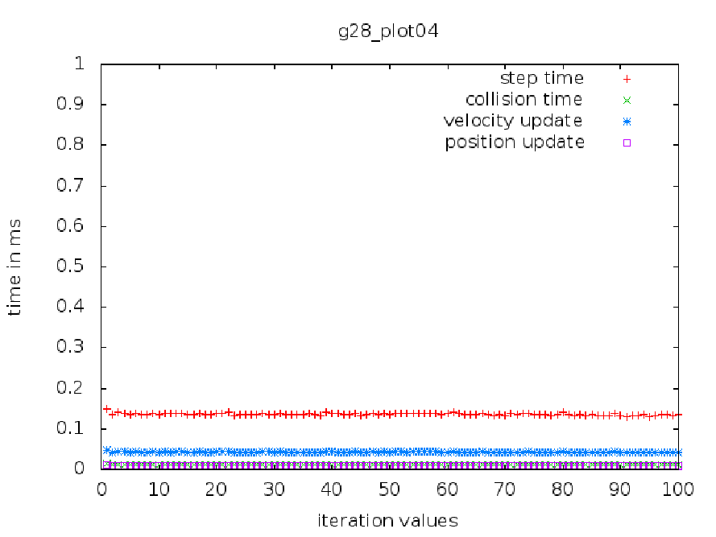
System Resource usage is Low
- From Plot02 we can see that the step-time values depend on velocity-update values, the position-update values, collision-time values so an increase in the values of step-time leads to the increase in the values of all the its dependents.
Plot05 : Time averaged over all iterative-values Vs Rerun-Values
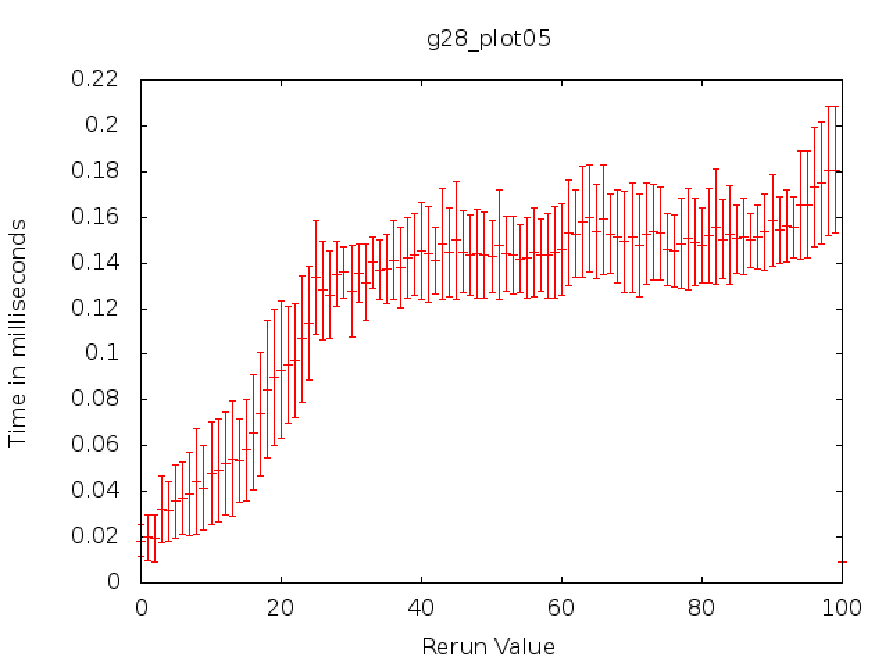
System Resource usage is High
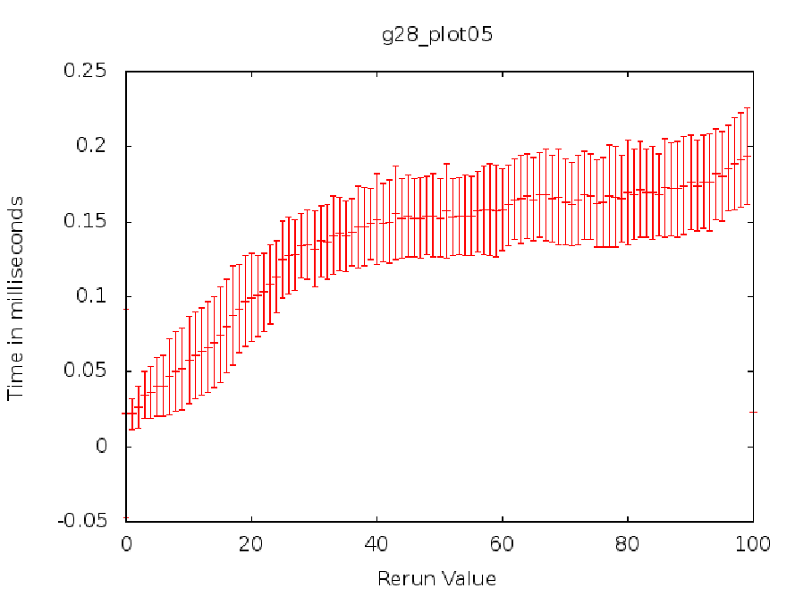
System Resource usage is Low

- We can see that as the number of iterative values increases the variance decreases
- The values of step-time leads to the increase or decrease in the values of all the its dependents. The variance is inversely proportional to $N$
Plot06 : Frequency Vs Step-Time
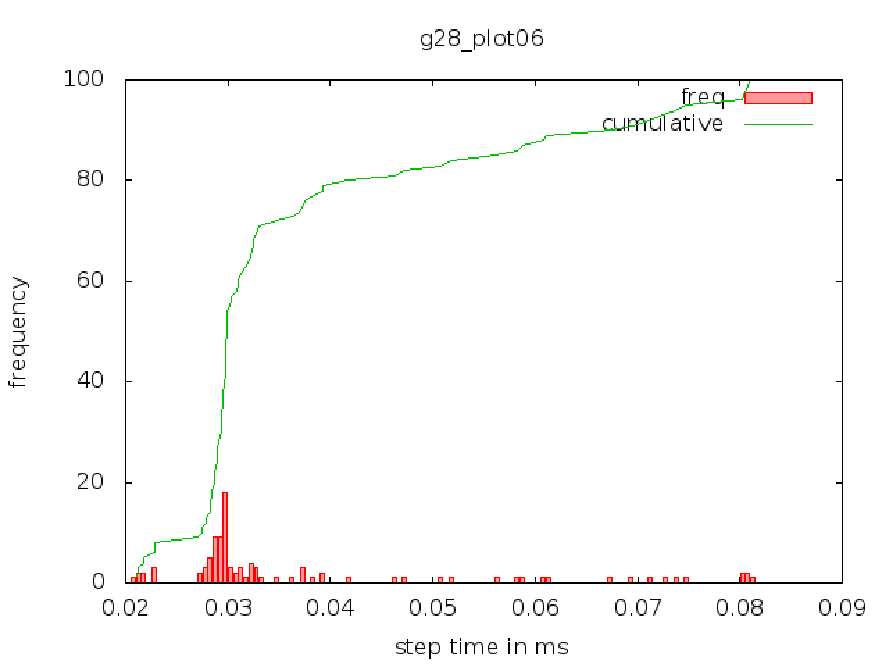
System Resource usage is High
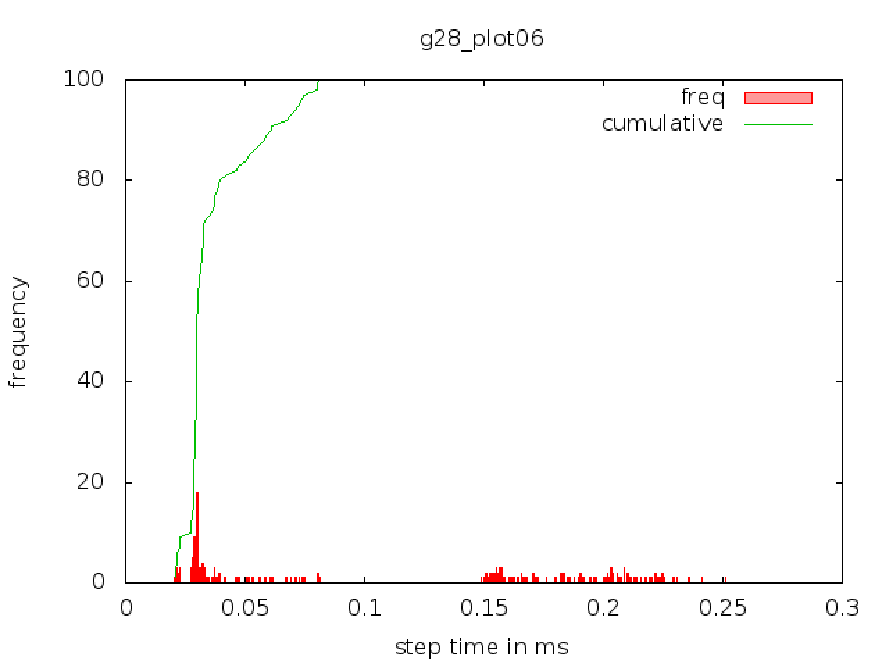
System Resource usage is Low
- we can see that there is an increase in the step-time with the increased usage of the System Resource.
Optimization
O3 and O2 functions optimize significantly which is visible by the time taken i.e 100000 iteration in debug version required 19.77s while release version with optimization turned on required 14.67s. The functions can be very effectively optimized by inlining i.e. overhead associated with calling and returning from a function can be eliminated by expanding the body of the function inline. This saves a lot of time.\\
In the release-version in-lining of functions is done extensively. This is visible from the profiles generated. In debug version in-lining is not done to analyse the code and make it more readable. This is because one needs to keep a track of all the calls that are generated in order have the debug data.\\ Observe a crucial fact that if the overhead of a calling the function which includes creating a environment, putting the function into the stack etc.. is much greater than the work the functions such functions are called inline while exectuing the code to make it work faster. Such a concept has been applied at many places during release optimization of the code. Hence we also observe that the number of functional calls have been significantly reduced due to such a methodology.\\ As visible from a call graph and images in release version, mostly the functions single functions calls. For example the b2Vec constructor has been called by various functions which has been all been turned inline. Caller-graphs in release version have less number of branches which again shows most of the computation is done in function itself. On the contrary this is not the case in Debug version of the Box2d library and it also turns out the the maximum time is taken up by the constructor( around 15 percent) being such a trivial function with no computation involved.\\ When iteration number are less most of the time goes in initializing and when iteration number are increased then time is mostly spent in distance calculation and then solving velocity constraints surpasses all and requires most time.\\ As visible from profiles basic arithmetic operations * , - and + requires a considerable amount of time. Arithmetic operation are also optimized in optimization for example multiply expressions can be implemented with bit operations. So functions using them also require considerable lesser time as compared to debug version. Moreover functions are not profiled/tracked when optimizations(especially in the release version of the code) are turned on which also contributes to a very high efficiency Project Code Which Can Be Optimized
- In b2ContactSolver.cpp line number 317, 402, 403 multiple calls to $vc->points$ in each loop can be saved instead of calling in each loop.
- Instead of calling mathematical functions like b2Dot and b2cross we can use those function description inline. For example: \begin{verbatim} b2Vec2::b2vec(float x ,float y) { x=x; y=y; } \end{verbatim} We can make this function inline and reduce the overhead
- For gdb to support inlined functions, the compiler must record information about in-lining in the debug information. So in debug version inline (definition is excluded.
Conclusion
We are very thankful to our instructor Prof Parag Chaudhari for giving us a wonderful opportunity to work on such a project and design our own RubeGoldberg machine. We are also very thankful to our TA's for constantly helping us in labs.